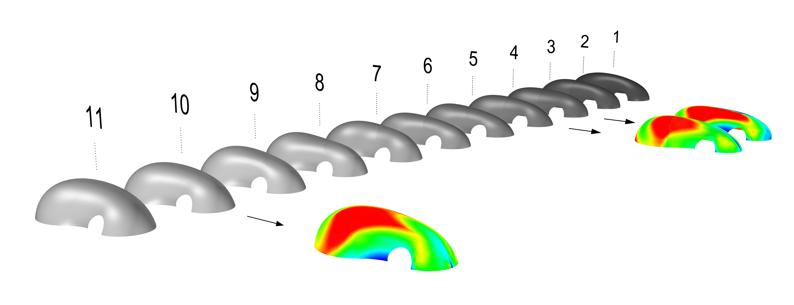
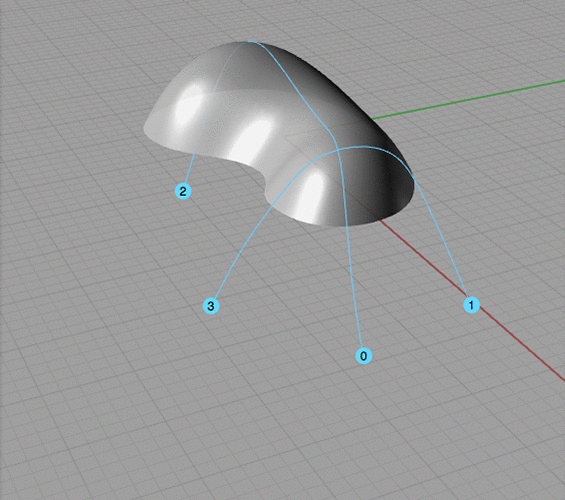
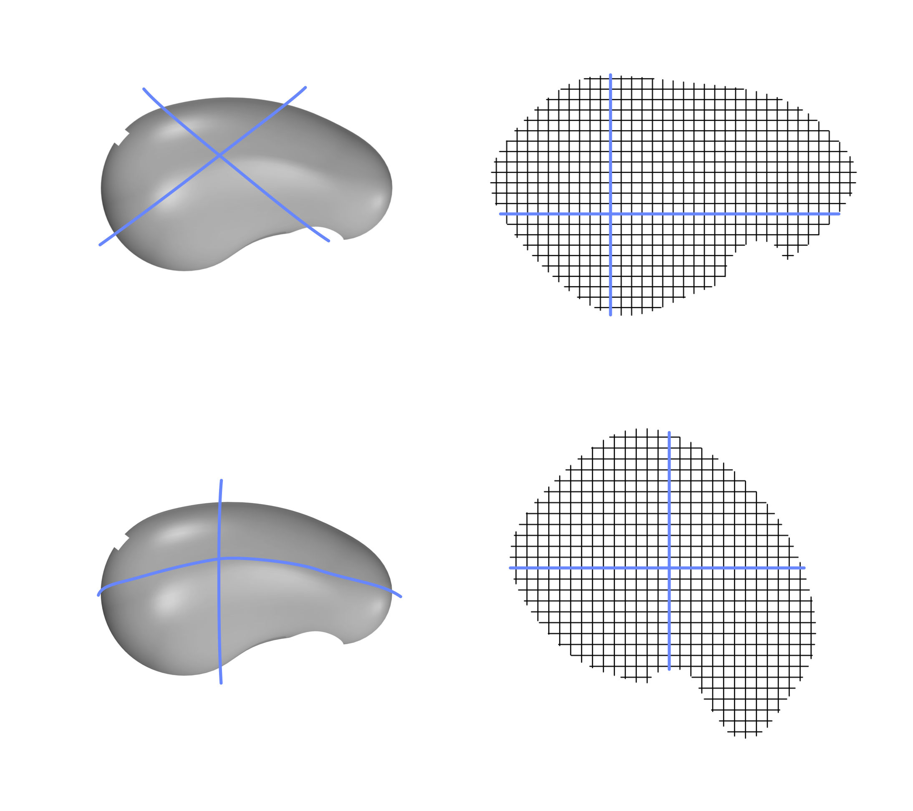
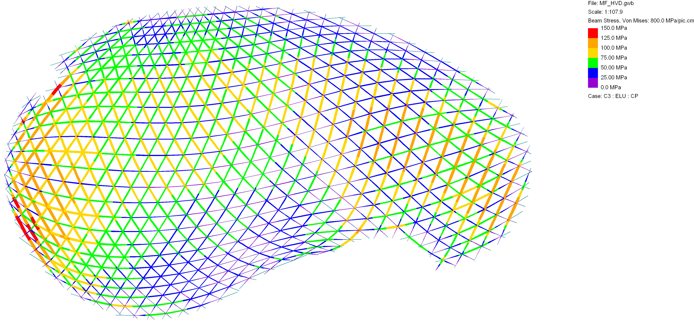

formfinding > gridfinding
shorter cycles
|  |
NURBS Modeling + Surface Curvature Evaluation |
|
|  |  |
Compass Method + Spline Curvature Evaluation [Otto 1971], [Masson 2017] |
|
Formfinding + Bending Stress Analysis |
||
| [Wakefield 1980], [Adriaenssens, Barnes, Williams 2001], [Douthe 2007] | ||
|  |
Structural Analysis + Eurocode |
|